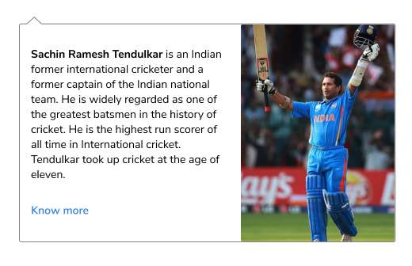

| India Innings | 277-4(48.2) | |||||
| Batsman | R | B | 6S | 4S | SR | |
 Virender
Shewag Virender
Shewag |
lbw b L Malinga | 0 | 2 | 0 | 0 | 0.00 |
|  Sachin Tendulkar | c K Sangakkara b L Malinga | 18 | 14 | 2 | 0 | 128.75 |
 Gautam
Gambhir Gautam
Gambhir |
b T Perara | 97 | 122 | 9 | 0 | 79.51 |
 Virat
Kholi Virat
Kholi |
c & b T Dilshan | 35 | 49 | 4 | 0 | 71.43 |
 MS
Dhoni (c & wk) MS
Dhoni (c & wk) |
not out | 91 | 79 | 8 | 2 | 115.19 |
 Yuvaraj
Singh Yuvaraj
Singh |
not out | 21 | 24 | 2 | 0 | 87.50 |
| Extras | 15(b 1, lb 6, w 8, nb 0, p 0, ) | |||||
| Total | 277(4 wkts, 48.2 0v) | |||||
| Did not bat | Suresh Raina, Harbhajan Singh, Zaheer Khan, Munaf Patel, S Sreesanth | |||||